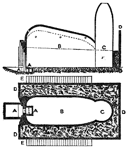
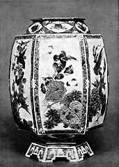

| The Letters of Père
D'Entrecolles
Part 3
From William Burton's Porcelain, It's Art and Manufacture,
B.T. Batsford, London, 1906.
I have before remarked that the foot of the porcelain piece was
left solid; in fact, only after it has been glazed and is dry do
they put it on the wheel to hollow out the foot. After that they
paint on it a little ring, and often a Chinese letter, and when
this painting is dry they glaze the part that has just been excavated,
and that is the last thing they do to it before it is taken to the
firing.
I have been surprised to see how a man can balance on his shoulders
two long and narrow planks on which the porcelain pieces are carried,
and that he goes like that through several well-populated streets
without breaking his ware. It is true that the people carefully
avoid knocking against him, however slightly, because they would
be obliged to pay for the damage they had caused, but it is astonishing
that the carrier himself controls his steps and all the movements
of his body so well that he does not lose his balance.
Where the furnaces are we find another scene. In a kind of vestibule
before the furnace one sees piles of boxes and cases made of clay
prepared for holding the porcelain. Each vase of porcelain, however
small it may be, has its case ; the pieces that have covers as well
as those that have none-these covers are only slightly attached
to the bottom part during the firing, so that they easily come apart
by a little blow. The small porcelain pieces, like tea- and chocolate-cups,
are placed a good many in one case. In this operation the workman
imitates Nature, who to ripen the fruit and bring it to perfection,
puts it into a case so that the heat of the sun gets at it little
by little, and its action inside is not too much interfered with
by the air that comes from outside during the fresh nights.
These cases (saggars) are lined inside with a kind of sand-down,
for they are covered with kao-lin dust as this sand does not stick
too much to the foot of the piece that is put on it. The bed of
sand is first pressed and given the shape of the bottom of the porcelain
piece, which does not itself touch the sides of its case. The top
of the case has no lid; a second case, after the shape of the first
and similarly filled with porcelain, comes on it, so that it covers
it completely without touching the porcelain underneath. In this
way they fill the kiln with big cases all containing porcelain.
Thanks to these thick veils the beauty, and, if I may say so, the
complexion of the porcelain piece is not sunburnt by the heat of
the fire.
With regard to the small pieces of porcelain which are enclosed
in the big round cases, each one is put on a saucer of clay about
as thick as two crown pieces, and as wide as the foot of the piece
itself ; kao-lin dust is also strewn over these supports. When the
cases are a little too wide, they do not put porcelain pieces into
the middle, because these would be too remote from the sides, so
that they might fail in strength and open and sink, and thus cause
damage to the whole pile. It is well to know that these cases are
one-third of a foot in height, and that they are partly filled before
they have been fired at all. Those that have been fired previously
and are still serviceable are filled entirely.
I must not forget the manner in which the pieces of porcelain
are placed in these cases. The workman does not touch the pieces
directly with his hands as he might break them, for nothing is more
fragile. He takes them off the planks by means of a little cord.
This cord is attached to a two-pronged wooden fork which he holds
with one hand, while with the other he holds the two ends of the
string that are crossed or opened according to the size of the piece;
the cord is passed round the piece, which is then gently lifted
and placed in the case or on its little saucer. All this is done
with incredible quickness.
I have already said that the bottom of the furnace is filled with
gravel to the depth of half a foot. This gravel serves to steady
the piles of cases, which in the middle of the furnace rise to a
height of at least seven feet. The two bottom cases of each pile
are left empty, because they would be insufficiently fired, and
also because the gravel bed partly covers them. In the same way
the case which is placed on the top of the pile is left empty. The
piles in the middle of the furnace are filled with the finest porcelain
; at the far end they place those pieces that are less fine, and
near the mouth they place those that are very strong, which are
composed of equal parts of kao-lin and Pe-tun-tse, and which have
been glazed with a stone that is somewhat black or reddish, because
this class has more substance in it than the other. The piles of
cases are placed close together, and are united by pieces of clay
put between them, at the top, at the bottom, and in the middle,
but so that a free passage is left for the flame to penetrate everywhere
evenly.1
Every kind of clay is not equally suitable for making the cases
; here they have three kinds ; a common yellow clay which predominates
in quantity, a hard clay, and a very unctuous clay. The last two
kinds of clay are mined in the winter in very deep mines, where
it is impossible to work in the summer.
Before the cases are fired they are yellowish ; after the firing
they are of a very dark red. For the sake of economy the yellow
clay is largely used, and that is why the cases only stand two or
three firings, after which they break completely. If they are only
slightly cracked or split, an osier ring is used to hold them together;
the ring burns away, but the case can be used this time without
the porcelain being injured. They have to take care not to fill
an oven entirely with new cases ; at least half of them must have
been fired before. These are placed at the top and the bottom of
the piles, while in the middle they place those that are newly made.
It is stated in the history of Fou-liang that the cases were formerly
fired alone before they were used for firing porcelain ; no doubt
in those days they thought less of the expense and more of a perfect
piece of work.
[Here follows an account of the construction of the Chinese porcelain
furnace, but in place of it we reproduce the plan and elevation
of a furnace in use at Ching-to-chen at the present time, which
will explain its construction much more clearly than the account
given in the letters.]

A. Fire mouth B. Body of
furnace C. Chimney D. Retaining wall E. Steps
to ascend to crown of furnace
On the top of the furnace there are three little peep-holes, covered
with some broken pieces of pot, and they relieve the air and smoke
of the oven. The workmen judge the progress of the firing by uncovering
the peep-hole which is nearest to the chimney, and with some irons
they uncover one of the cases. They judge that the porcelain is
finished by the brightness inside the oven and especially how the
colours shine in their brilliance.2
Then they leave off the firing and close up the furnace for some
time. The furnace is fired as follows : They first heat it for a
day and a night, then two men, who relieve each other, keep on putting
in wood, of which they burn as much as 180 loads. It is stated in
the annals that formerly they used 240 loads of wood, and twenty
more if the weather was rather rainy, although at that time the
ovens were only half as large as at present. They first kept up
a small fire for seven days and nights, and on the eighth day they
made a very fierce fire. It will clearly be seen, therefore, that
the old porcelains must have had more substance than the modern
ones. Formerly they observed one thing that is neglected nowadays.
When the firing was finished they did not open the furnace for ten
days for the big porcelain pieces, and for five days for the small
ones. At the present time they wait, it is true, a few days before
they open the furnace and take out the big pieces, for without this
precaution they would crack, but the small pieces are taken out
the following morning if the fire has been put out at the beginning
of the previous night. When the porcelain is burning hot the workman
who pulls it out can only touch it by protecting his hands with
the ends of a long scarf which hangs round his neck. I have been
surprised to hear that, after having burned in one day as much as
180 loads of wood, there were no ashes left in the fireplace the
next morning.
After all I have said no one can be astonished that porcelain
is so dear in Europe, and still less so when they hear that, besides
the great profits of the European and Chinese merchants, the whole
oven-full is hardly ever successful. Sometimes it is quite lost,
and when they open the furnace they find the porcelain pieces and
the cases reduced to a mass as hard as rock. Neither is it easy
to regulate the fire, for the state of the weather instantly changes
the action of the fire, the quality of the material it acts upon,
and that of the wood which keeps it going. For one workman who gets
rich there are a hundred others who ruin themselves, though they
still try their fortunes further in the hope that they may save
enough to become shopkeepers. Moreover, the porcelain that is sent
to Europe is made after new models that are often eccentric and
difficult to reproduce; for the least defect they are refused by
the merchants, and so they remain in the hands of the potters, who
cannot sell them to the Chinese, for they do not like such pieces.
I
have said that the difficulty of making certain models sent from
Europe is one of the reasons why the pieces are so costly. It is
almost impossible for the Chinese to make some of the shapes sent
to them from foreign countries, although they make many things at
which foreigners are astonished, or that they would consider impossible.
For instance, I have seen a large porcelain lantern made in a single
piece, through which a candle lit up the whole room; this piece
was ordered seven or eight years ago by the heir-apparent.3
(See image on left)
The same Prince ordered also different musical instruments, amongst
others a kind of little organ called tseng, which is about a foot
high and contains about fourteen pipes, the melody of which is agreeable
enough; but every attempt to make this failed. They were more fortunate
in making flutes and flageolets, and another instrument, called
Yun-lo, which is composed of a set of little round, somewhat concave,
plates, each of which gives a particular note. Nine of these are
hung in a frame in different rows and played upon with small sticks
like the dulcimer; they ring like little bells and are used to accompany
other instruments or the voices of singers. They had, so they tell
me, to make many experiments to find out the thickness required
and the correct firing needed to produce all the tones and get all
the notes that are necessary for a chord. I had thought they must
have the secret of inserting a little metal in the body of these
porcelain pieces to vary the note, but they have undeceived me.
Metal is so ill-adapted to combine thin slabs with a space between,
joining them together only by cross-bars. These slabs have two holes
pierced at either end, so that they may be inserted in some cabinet
work or upon the back of a chair, where they look very effective.
The history of Ching-te-chen speaks of different pieces, ordered
by the Emperors, that the potters have tried in vain to make. The
father of the reigning Emperor ordered some boxes, three and a half
feet long and two and a half feet high, and the bottom was to be
half a foot thick and the sides a third of a foot. They worked at
these pieces for three consecutive years, and made nearly two hundred
examples, not one of which was successful. The same Emperor ordered
some slabs for the front of an open gallery ; each slab was to be
three feet high and two and a half feet wide, and half a foot thick.
All these, said the old people of Ching-t2-chin, cannot be done,
and the Mandarins of this province presented a petition to the Emperor
supplicating him to stop this work.
The Mandarins, knowing how great is the genius of Europeans in
inventions, have often asked me to procure from Europe new and curious
designs so that they might present something unique to the Emperor.
On the other hand, the Christians beg me very strongly not to procure
such models,, because the Mandarins cannot be so easily convinced
as our merchants when the workmen tell them that something is impracticable,
and often the bastinado is liberally administered before the Mandarin
will abandon a scheme that he thinks may be of profit to him.
As each profession has its particular idol, and as Divinity is
conferred here as easily as the rank of count or marquis in some
European countries, it is not surprising that they have a god of
porcelain. Pou-sa (the name of this idol) owes its origin to those
designs which the workmen find it impossible to execute. They tell
us that formerly the Emperor decreed positively that some porcelain
pieces should he made after a pattern which he gave. He was told
several times that it was impossible, but all these remonstrances
only served to excite his desire. His officers redoubled their demands,
and used all kinds of severities to the workpeople. These unfortunates
spent all their money and tried their utmost, but they received
only beatings in return. At last one of them, in a moment of despair,
threw himself into the burning furnace and was consumed in an instant.
The porcelain in that furnace, so they say, came out perfectly beautiful
and to the satisfaction of the Emperor, who asked for nothing more.
From that time the unfortunate man was regarded as a hero, and became
in consequence the idol that watches over the workers in porcelain.
I do not know whether his elevation has tempted any other Chinese
to follow the same route with a view to a similar honour.
As porcelain has been so highly esteemed for many centuries, one
would wish to know how the porcelain of the earliest times differs
from that of our own days, and what the Chinese themselves think
about it. There is no doubt that China has her antiquaries who greatly
favor old things. The Chinaman himself is naturally prone to respect
ancient productions, though one finds those who defend modern work;
but porcelain is not like ancient medals, which reveal the science
of bygone times. Ancient porcelain may be decorated with Chinese
characters, but these do not denote any historical period, so that
the curious can only prefer them for something in the style and
the colours. I think I have heard it said, when I was in Europe,
that porcelain to be perfect must have been buried for a long time
in the ground. This is a false opinion which the Chinese ridicule.
The history of Ching-te-chen, speaking of the most beautiful porcelains
of earlier times, says that it was so much sought after that the
furnace was hardly opened before the merchants were disputing for
the first choice. It cannot be supposed from that that it had been
buried. It is true that in digging in the ruins of old buildings
and especially in cleaning out old, disused wells, beautiful pieces
of porcelain are sometimes found which have been hidden there in
times of revolution. This porcelain is beautiful because at such
times people would only think of hiding what was precious, that
they might recover it when the troubles were over. If it is esteemed
now it is not because it has acquired any fresh beauty in the heart
of the earth, but because its old beauty has been preserved, and
this alone is prized in China, where they give large sums for the
smallest utensils of the common pottery that was used by the Emperors
Yao and Shun, who reigned several centuries before the T'ang dynasty,
during which porcelain began to be used by the Emperors. All that
the porcelain acquires in growing old in the earth is a slight change
in its colourings or, if you prefer, in its tint, which shows that
it is old. The same thing happens to marble or ivory, but more readily,
because the glaze prevents the moisture penetrating so easily into
porcelain. I can say this, that I have found in old ruins porcelain
pieces that were probably very old, but I have not noticed anything
special about them. If it is true that in growing older they become
more perfect, they could not have been like the porcelain made nowadays
when they left the hands of their makers. What I believe is, that
formerly, as at the present time, there was porcelain of all prices.
The Mandarin of Ching-te-chen, who honours me with his friendship,
makes his patrons at the Court presents of old porcelain that he
has the talent of making himself. I mean that he has found the art
of imitating old porcelain, or at least that of a moderate antiquity;
he employs at this work a number of workpeople. The materials of
these false antiques is a yellow clay found in a place near to Ching-to-chen
called Ma-an-shan (Saddle-back Hill). The pieces are very thick,
for a plate that the Mandarin has given me weighs as much as ten
ordinary ones. There is nothing special in the workmanship of these
pieces, only that they are given a glaze made from a yellow stone
which is mixed with the ordinary glaze, the latter predominating;
this mixture gives the porcelain a sea-green colour. These false
antiques also resemble genuine pieces in that they do not ring when
struck and make no humming noise when held close to the ear. After
it has been fired it is boiled for some time in a very fat broth,
and after that it is placed in the foulest sewer, where they leave
it for a month or more. When it comes out of this sewer it passes
for being three or four centuries old, or at least of the preceding
dynasty of the Ming, when porcelain pieces of this colour and thickness
were highly esteemed at Court.
They have brought me from the debris of a large shop a small plate
that I value more highly than the finest porcelain pieces made a
thousand years ago. On the bottom of this plate is painted a crucifix
between the Holy Virgin and St. John ; I am told that formerly they
used to export such pieces to Japan, but that none of them have
been made for sixteen or seventeen years. Apparently the Christians
of Japan made use of this industry, during their persecution, to
procure images of our sacred mysteries ; this porcelain piece, mixed
in the case with the rest, might have escaped the search of the
enemies of our religion. These pious artifices must have been discovered
in the course of time and rendered of no avail by a stricter search,
and that is no doubt the reason why they have ceased to make this
kind of ware at Ching-te-chen.
(The letter concludes with some general remarks which need not
be given here, but we cannot refrain from quoting the final sentences.]
Ching-te-chen owes to the liberality of M. le Marquis de Bruise
a church which has a numerous congregation, increasing considerably
every year. May God pour His benedictions more and more over these
fresh faithful: I recommend them to your prayers. If they were helped
by some assistance to increase the number of catechists the people
of China would be enabled to learn that not only the luxury and
cupidity of Europeans make them send their money as far as Ching-te-chen,
but that there are zealous persons who have nobler intentions than
those who bring from there such fragile jewels.
Footnotes:
- The porcelain oven or furnace described by
Pere d'Entrecolles is that which is used in China to this day
; it is practically a deep horizontal reverberatory furnace ;
a similar kiln has even been used in Europe, especially in Germany,
but has almost entirely been abandoned for many years now on account
of the uneven way in which such kilns fire.
- By this he must mean the colours of the
glazes, or of the underglaze colours, for no others are fired
in these furnaces.
- This heir-apparent was the fourth son of the Emperor K'ang-hsi.
He
came to the throne under the title of Yung-cheng in 1735, and
in the next chapter it will be seen what attention he paid to
the porcelain manufactured in his reign.
More Articles
|